Vaccination Coverage Analysis Among Pregnant Women
1. Introduction
The purpose of this tutorial is to provide a comprehensive understanding of the different stages in the data science lifecycle.
Data science is a structured process that allows us to extract meaningful insights from data, and this tutorial focuses on four key stages:
Data Collection
Data Processing
Exploratory Data Analysis and Data Visualization
Model Analysis
Interpretation of Results
The overall aim of this data science cycle is to collect data, identify demands and trends, conduct exploratory data analysis,
and interpret the findings. While the results of this tutorial may not be fully conclusive, the process provides a clear understanding
of how data science works in practice. It also highlights the critical role that data science plays across various sectors, including healthcare,
industries, finance, and more. Data-driven decision-making has become a cornerstone in modern industries, and understanding how to handle, analyze,
and visualize data effectively is a crucial skill for any aspiring data scientist.
For this tutorial, I have chosen a dataset from the
Centers for Disease Control and Prevention (CDC). The dataset focuses on vaccination coverage among pregnant women in the United States.
Vaccination during pregnancy is an important public health concern, as it helps protect both the mother and the baby from preventable diseases.
Analyzing this dataset allows us to understand patterns of vaccine uptake, explore disparities across different age groups and ethnicities,
and identify states or regions where coverage may be lower. These insights can help public health professionals and policymakers design
interventions to improve vaccination rates.
By working with this dataset, I aim to gain hands-on experience with real-world data. The process involves handling raw data that may contain
inconsistencies, missing values, or different formats, which is typical in practical data science projects. This tutorial demonstrates how
cleaning and preprocessing are essential to prepare the dataset for analysis, ensuring that the results are accurate and meaningful.
Additionally, performing exploratory data analysis and visualizations helps to uncover trends, patterns, and outliers that might otherwise
go unnoticed.
Beyond the technical aspects, this exercise emphasizes the importance of understanding the context of the data. In healthcare, for instance,
analyzing vaccination coverage provides actionable insights that can influence public health policies, resource allocation, and community outreach programs.
Data science is not just about building models or computing statistics; it is about deriving knowledge that can lead to real-world impact.
Through this tutorial, I also learned how data science methodologies can be applied in different sectors, illustrating the versatility and relevance of
data-driven approaches in solving practical problems.
Overall, this tutorial offers a holistic view of the data science lifecycle, from data collection to result interpretation.
Even though the outcomes of the analysis may vary or have limitations due to the dataset size, structure, or quality, the learning gained is invaluable.
It provides a foundation for further exploration, experimentation, and application of data science techniques in both academic and professional settings.
By completing this exercise, I now have a deeper appreciation of the iterative and structured approach required in data science projects,
and I am better prepared to apply these skills to future datasets and research questions.
2. Data Collection
The first and essential step in any data science project is Data Collection. The quality and volume of the data we work with
directly influence the accuracy and usefulness of the results. Data can be collected from a variety of sources depending on the project
requirements. Common sources include:
Web scraping from publicly available websites or portals.
Downloading datasets from reliable repositories, open data platforms, or government databases.
Data generated from internal systems, experiments, or code simulations.
For this tutorial, I have chosen to download the dataset and load it from my local system. The dataset focuses on vaccination coverage among pregnant
women in the United States and was obtained from the
Centers for Disease Control and Prevention (CDC). By using a dataset that is well-structured and has a satisfactory volume of data,
we can ensure that the subsequent analysis and modeling will yield meaningful insights.
Collecting a good dataset is not just about the number of records but also about its completeness, relevance, and reliability. A well-collected
dataset forms the foundation for the next stages in the data science lifecycle, including data processing, exploratory analysis, and predictive modeling.
Importing Python Libraries
Once the dataset is available, the next step is to import the necessary Python libraries. Python provides a rich ecosystem of libraries
that enable us to efficiently process, analyze, and visualize data. Some of the key libraries that will be used include:
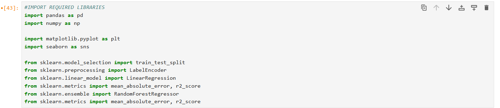
Download and Import the Data
Extract the CSV file from the provided link, and ensure that you move it into the same folder where you are running your Python program
or Jupyter Notebook.
Understanding the Data
Before moving on to the next stages of the data science process, it is important to understand the dataset we are working with.
Each row represents an individual observation, and each column contains a specific attribute or measurement. Taking time to explore
and familiarize yourself with the data is crucial for ensuring meaningful analysis in later steps.
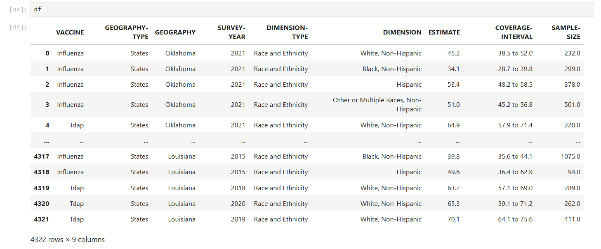
3. Data Cleaning and Exploratory Data Analysis
Once the dataset was successfully loaded, the next stage in the data science lifecycle involved cleaning the data and performing exploratory analysis.
Data cleaning is an essential part of any data project because raw data is often incomplete, inconsistent, or difficult to analyze in its original form.
Cleaning the data prepares it for reliable analysis and ensures that any insights or predictions derived from it are accurate and meaningful.
Data cleaning usually involves several tasks, such as removing unnecessary information, handling missing values, fixing formatting issues,
and transforming variables into formats that are easier to work with. In this project, the data cleaning process consisted of the following key steps:
Identifying Missing and Inconsistent Data:
The dataset contained missing values in columns such as Sample Size and Coverage Estimate.
The 95% CI column also had non-numeric values like NR and NR*.
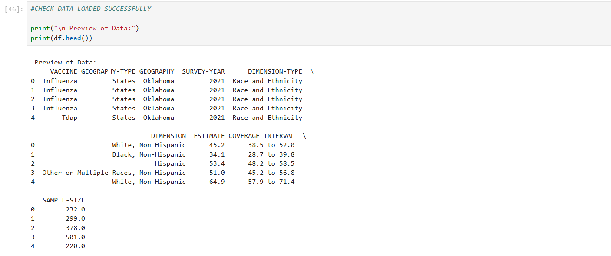
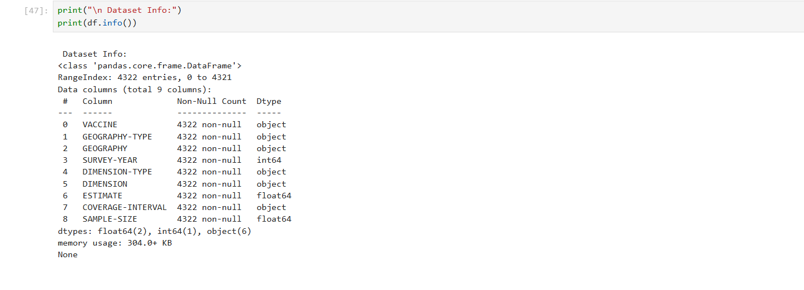
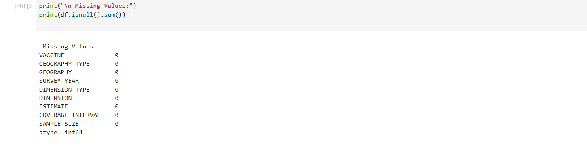
Renaming Columns for Better Readability:
Some column names were long or unclear, so they were renamed to more readable labels.
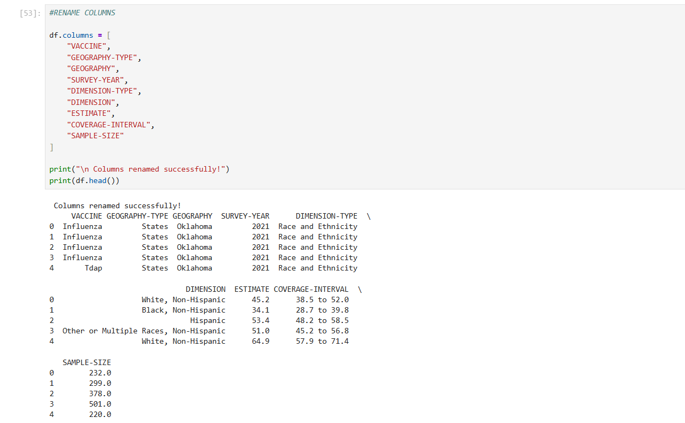
Handling Missing Values with Median Imputation:
The median was used to fill missing values because it is more robust to outliers.
Sample Size missing values were filled with the median.
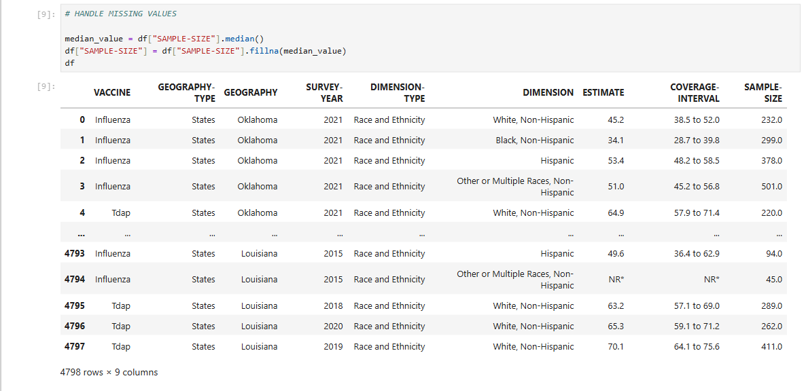
Coverage Estimate missing values were also filled using the median.
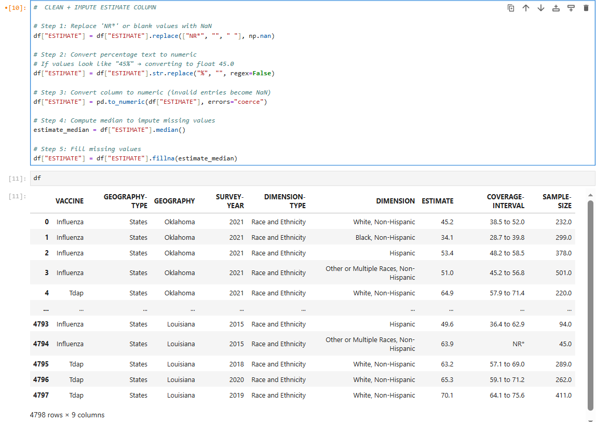
Dropping Invalid Confidence Interval Rows:
Rows with NR or NR* in the 95% CI column were removed.
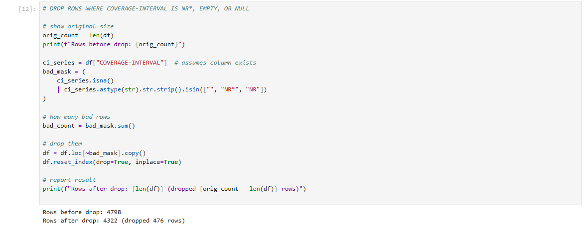
Exploratory Data Analysis
Exploratory Data Analysis (EDA) was then performed to identify trends, distributions, and relationships within the dataset.
This helped build a deeper understanding of the factors influencing vaccination coverage.
Once the dataset was cleaned, the next step was to perform Exploratory Data Analysis (EDA).
EDA helps us understand the underlying structure of the data, identify patterns, detect anomalies,
and gain insights that guide later modeling decisions. This stage allows us to visually and statistically explore
how different variables behave and relate to one another.
Summary Statistics
The summary statistics provided an overview of the dataset, including distributions, counts, and central tendencies
for both numerical and categorical variables. The dataset contains 4,322 records across different years, states,
and demographic groups. Two vaccines are included — Influenza and Tdap. The survey spans from
2012 to 2022, giving a wide range for trend analysis.
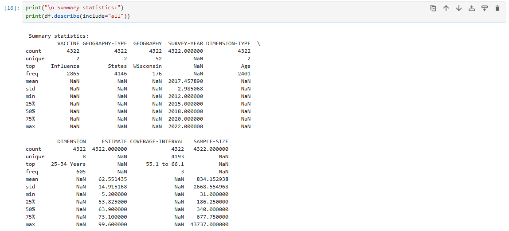
Figure: Summary Statistics Output
Vaccine Distribution
A value count of the VACCINE column showed that Influenza records (2,865 entries) are almost double compared to
Tdap records (1,457 entries). This highlights greater emphasis and availability of influenza vaccination data.
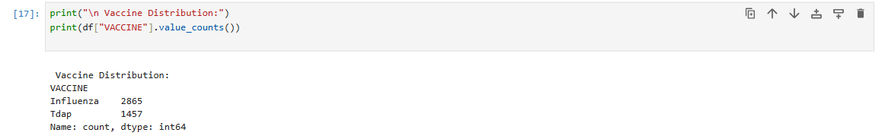
Figure: Vaccine Count Distribution
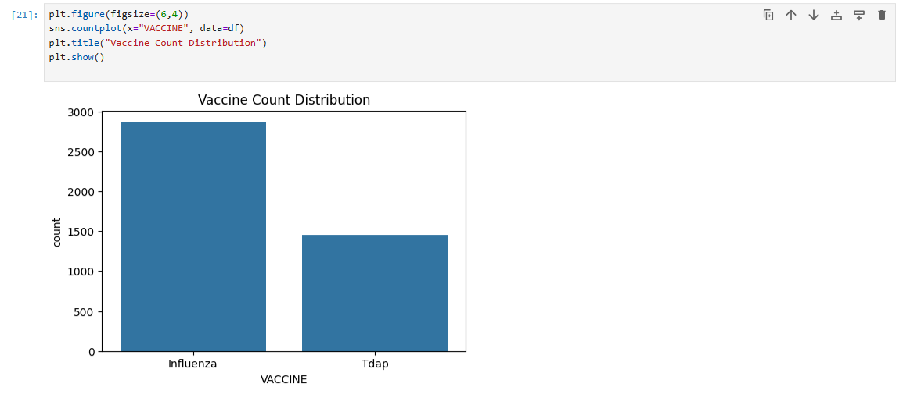
Figure: Vaccination Estimate Comparison Between Vaccines
Geography Type Distribution
The dataset contains mostly state-level observations, with 4,146 state entries and 176 national entries.
This provides strong support for performing deeper geographic trend analysis.
Figure: National vs State Coverage Records
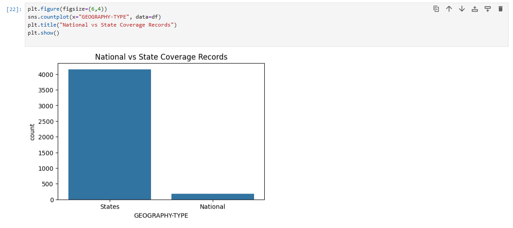
Figure: Coverage Comparison — Age vs Race/Ethnicity
Demographic Dimension Distribution
The dataset includes two major demographic dimension types: Age and Race/Ethnicity.
The most common categories include 25–34 Years, ≥18 Years, White Non-Hispanic, Hispanic, and Black Non-Hispanic.
This wide representation allows meaningful comparison between demographic groups.
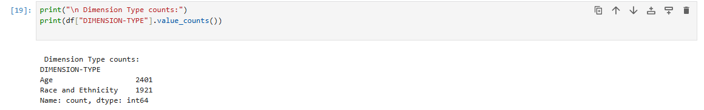
Figure: Distribution of Dimension Categories
Vaccination Estimate Comparisons
Boxplots were used to compare coverage estimates between vaccine types and demographic dimensions.
Influenza coverage appears generally higher and more consistent than Tdap coverage.
Age-based comparisons reveal that some age groups (especially 25–34 Years) tend to have higher vaccination rates.
Age Group Vaccination Analysis
A focused analysis on age groups showed noticeable differences across the categories.
The 25–34 Years group generally displayed higher vaccination coverage, while the 18–24 Years group
tended to have lower averages. These patterns can help public health authorities target specific demographic groups for awareness campaigns.
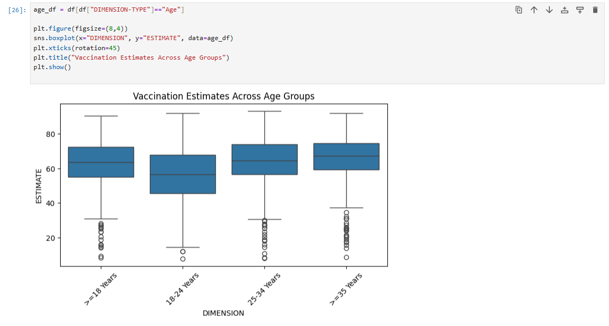
Figure: Vaccination Estimates Across Age Groups
Coverage Trends Over Time
A line plot of vaccination estimates from 2012 to 2022 revealed an upward trend in vaccination coverage for both Influenza and Tdap.
Coverage increases steadily until around 2019, after which minor fluctuations appear in the following years.
This long-term trend suggests improved awareness and accessibility of maternal vaccination programs.
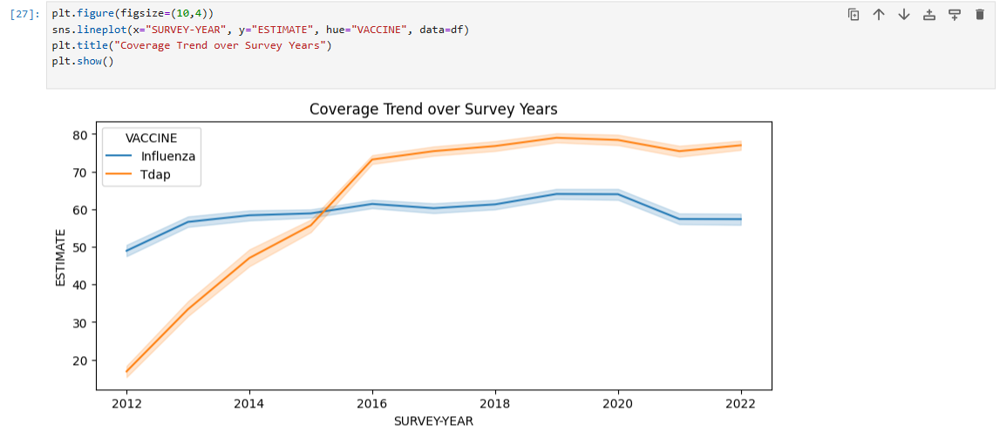
Figure: Vaccination Coverage Trend from 2012–2022
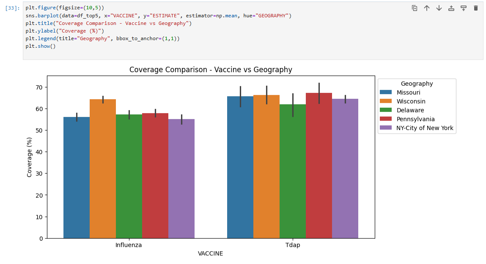
Figure: Vaccination Coverage Trend from 2012–2022
Top 5 States by Data Availability
The five states with the highest number of records (excluding national data) were:
Wisconsin
Delaware
Pennsylvania
NY–City of New York
Missouri
These states were analyzed in more detail to examine state-specific vaccination patterns and trends.
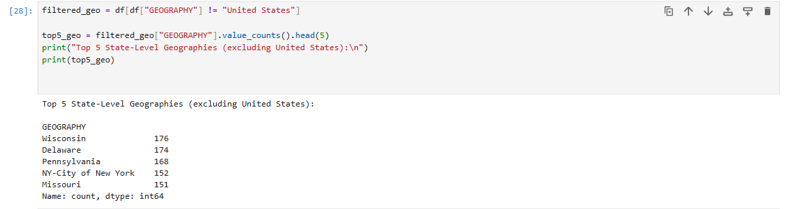
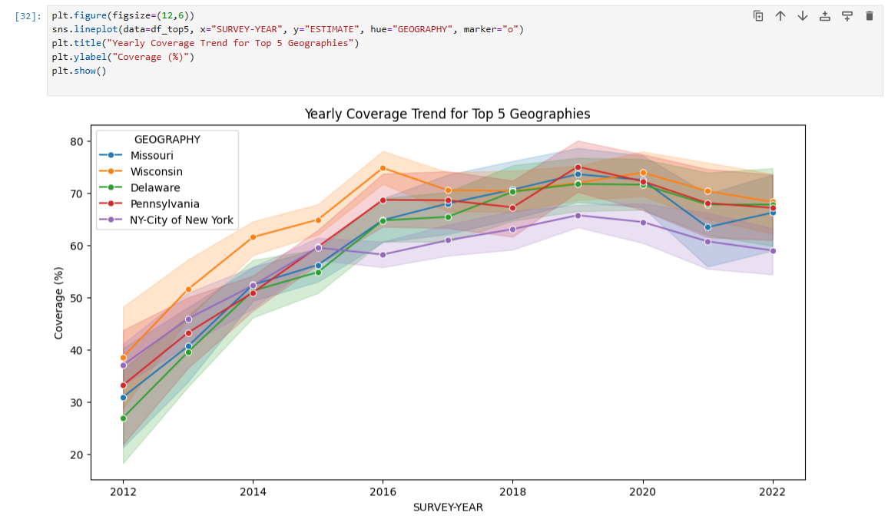
4. Model Training and Testing
After completing the data cleaning and exploratory analysis, the next step in the data science workflow
involved building predictive models to estimate vaccination coverage.
The objective of this stage was to determine whether vaccination rates among pregnant women can be
predicted using demographic, geographic, and temporal variables such as vaccine type, state, age group,
and survey year.
Data Preparation for Modeling
Since machine learning models require numerical values, all categorical columns
(such as VACCINE, GEOGRAPHY, DIMENSION, etc.)
were converted into numerical labels using Label Encoding.
This transformed the dataset into a form that could be processed by machine learning algorithms
without losing the underlying categorical relationships.
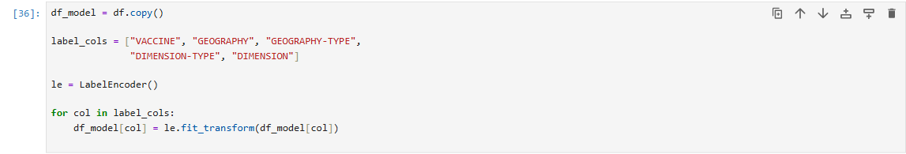
Figure: Summary Statistics Output
The input features included:
VACCINE (Influenza or Tdap)
GEOGRAPHY (State/National)
GEOGRAPHY-TYPE
DIMENSION-TYPE (Age or Race/Ethnicity)
DIMENSION (Specific age group or demographic group)
SURVEY-YEAR (2012–2022)
The target variable was the ESTIMATE,
which represents the vaccination coverage percentage.
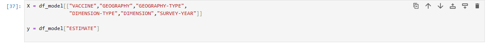
Figure: Summary Statistics Output
The dataset was then split into 80% training data and
20% testing data using the train_test_split method.
This ensured fair evaluation by training the model on one portion of the data and testing it on unseen values.
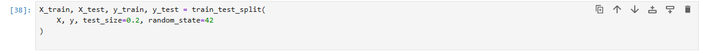
Figure: Summary Statistics Output
Model 1: Linear Regression
The first model applied was a Linear Regression model.
This simple model attempts to describe the relationship between predictors and vaccination coverage
through a straight-line equation.
While linear models are easy to interpret, they may not fully capture complex nonlinear relationships
present in public health data.
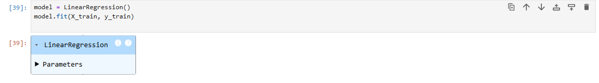
Figure: Summary Statistics Output
The Linear Regression model produced the following performance metrics:
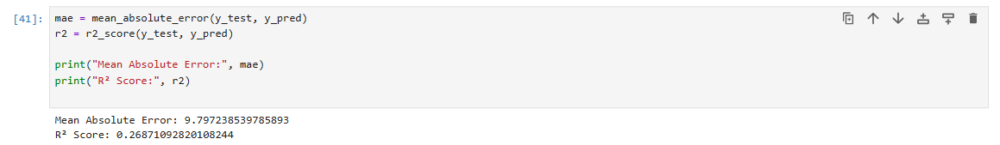
Figure: Summary Statistics Output
Model 2: Random Forest Regressor
To improve predictive performance, a Random Forest Regressor
was trained. This model uses multiple decision trees and combines their outputs,
making it capable of capturing complex patterns, nonlinear interactions,
and variations in the dataset.
The Random Forest model achieved significantly better results:
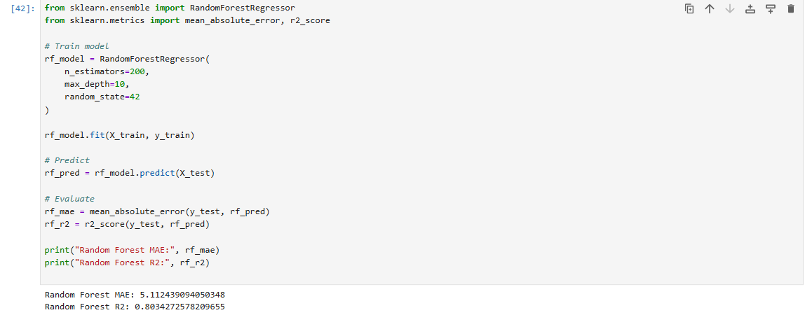
Figure: Summary Statistics Output
These metrics indicate that the Random Forest model explains approximately
80% of the variation in vaccination coverage data,
making it a strong predictive model compared to Linear Regression.
The model successfully leveraged demographic, geographic, and temporal factors
to produce more accurate predictions.
5. Interpretation of Results
The results obtained from the two machine learning models provide important insights into the
predictability of vaccination coverage among pregnant women. By examining the performance metrics
and comparing both models, we can understand how well different demographic and geographic factors
contribute to predicting vaccination rates.
Model Performance Comparison
The Linear Regression model delivered modest performance, with an R² score of 0.27.
This indicates that the linear model could only explain about 27% of the variance in vaccination coverage.
The relatively high MAE value (9.79) suggests that its predictions deviated from the actual coverage values
by nearly 10 percentage points on average.
This outcome reflects the limitations of linear models when the data contains nonlinear interactions,
such as varying demographic patterns and state-specific differences.
In contrast, the Random Forest Regressor demonstrated much stronger predictive capability.
With an R² score of 0.80, the model was able to explain 80% of the variability in the dataset,
showing that vaccination rates can be predicted effectively using factors such as demographic group,
vaccine type, and survey year. The MAE dropped to 5.11, meaning predictions were much closer to the
actual values.
Insights from the Modeling Process
Several meaningful insights emerge from these results:
Vaccination coverage is influenced by demographic and geographic factors.
Differences between age groups, racial/ethnic groups, and states contribute significantly to the model’s predictive ability.
Year-to-year changes matter.
The survey year has predictive power, likely due to policy changes, awareness campaigns, and
public health interventions over time.
Nonlinear models capture complex patterns better.
The large difference between Linear Regression and Random Forest performance shows that vaccination behavior
is not linear and requires more flexible modeling techniques.
Overall Interpretation
The modeling results demonstrate that vaccination coverage among pregnant women can be
predicted with relatively high accuracy using key variables in the dataset.
The Random Forest model, in particular, highlights the strong influence of demographic factors
and geographic differences on vaccination behavior.
These findings emphasize how machine learning can support public health planning by identifying
which groups may need more targeted communication, outreach, or vaccination programs.
Although no predictive model is perfect, the results indicate that data-driven approaches
can effectively guide decision-making in maternal health and vaccination initiatives.